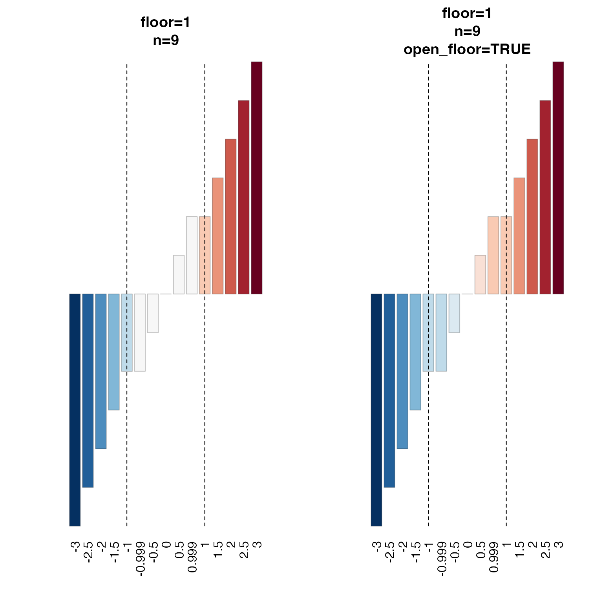
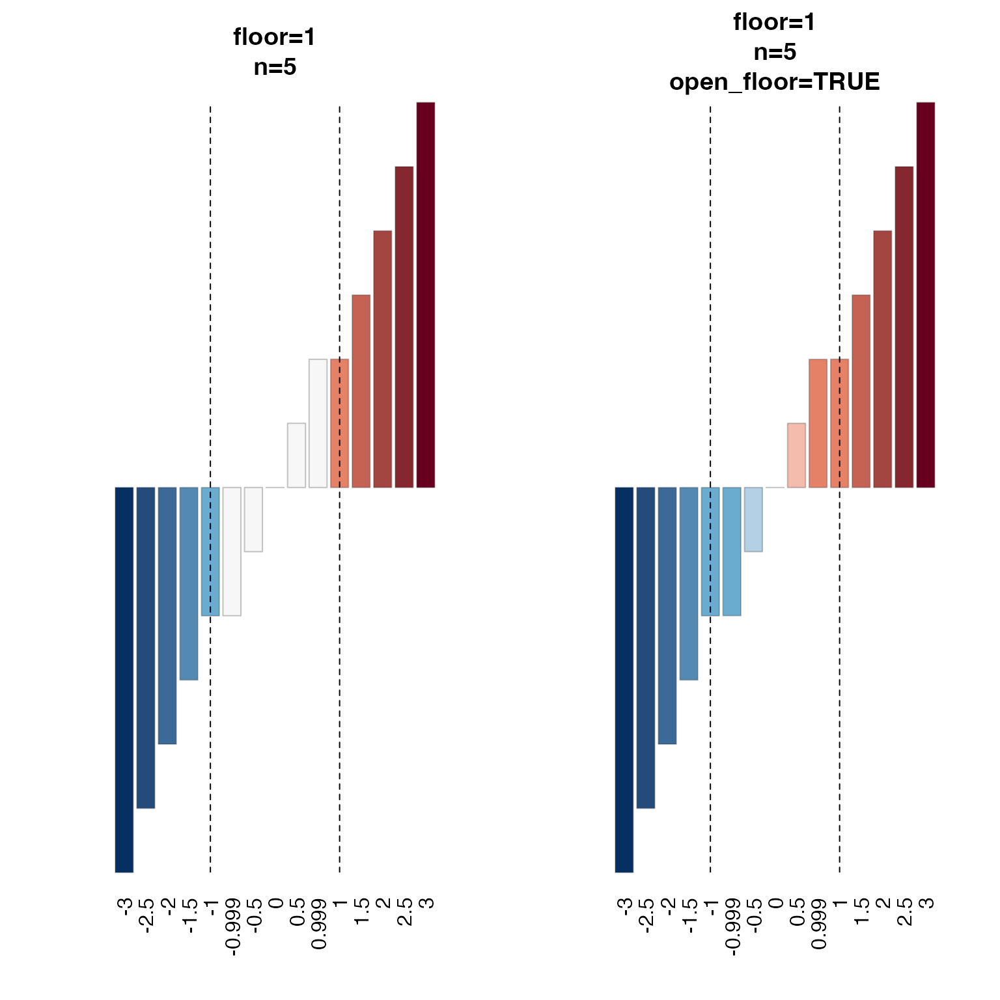

R/colorjam-gradient.R
col_div_xf.RdDivergent color interpolation function with adjustable range and optional color floor
col_div_xf(
x = 1,
floor = 0,
lens = 0,
n = 15,
colramp = "RdBu_r",
open_floor = FALSE,
debug = FALSE,
...
)numeric value used as a threshold, where numeric
values at or above this value x are assigned the last
color in the color gradient. Negative values at or below
this negative value -x are assigned the first color
in the color gradient.
numeric optional value where numeric values
between -x and x are assigned the middle color in the
color gradient. Note that values at exactly x or -x
are assigned the next respective color away from the middle
color. When floor=0 or floor=NULL no floor is applied,
and colors are assigned using a continuous range of
numeric values from -x to x with length n.
numeric value indicating a color lens applied
to the color gradient, passed to jamba::getColorRamp().
Lens values lens > 0 will condense the color gradient,
making smaller changes more visually distinct; lens < 0
expands the color gradient, making smaller changes less
visually distinct.
integer number of colors used for the initial
color gradient. This value is forced to be an odd number,
so the "middle color" will always be represented as one
strict color. Note that when using a floor, the first
non-middle color is used for the floor assignment
which means a smaller n value will assign a more visibly
distinct color than using a larger n. See examples.
character passed to jamba::getColorRamp()
which recognizes one of several forms of input:
character string matching the name of a color ramp
from RColorBrewer (see divergent palettes with
RColorBrewer::display.brewer.all(type="div")).
Note that adding "_r" will reverse the color gradient,
so the default "BuRd_r" will create a color gradient
with "blue-white-red" - with red for high values
consistent with "heat" in "heatmaps" - where heat is red.
character vector of R colors, which define a specific
color ramp. This vector will be expanded to n length.
logical indicating whether colors below
the assigned floor will still receive non-middle color.
Setting open_floor=TRUE is the best method to compare
the effect of assigning the strict middle-color to values
below the floor, versus using gradient colors below the
floor, while all remaining numeric-color assignments
are held constant.
logical indicating whether to produce a plot
that shows the resulting color gradient.
additional arguments are ignored.
function that maps a vector of numeric values
to R colors using the divergent color gradient and numeric
thresholds defined.
This function is intended to extend the very useful function
circlize::colorRamp2() which takes a numeric vector of
breaks, and a character vector of R colors, and returns
a function that maps numeric values to R colors using
interpolated color gradient. This function is intended for
specific cases using a divergent color gradient, where this
function assumes colors should be mapped to positive and
negative numeric values centered at zero.
A driving use case is with ComplexHeatmap::Heatmap(), with
argument col that contains a color function produced by
circlize::colorRamp2() or a color vector. However, when
supplying a divergent color vector, the colors are not applied
symmetrically above and below zero.
Other colorjam gradients:
col_linear_xf(),
make_jam_divergent(),
twostep_gradient()
Other colorjam assignment:
col_linear_xf(),
group2colors(),
matrix2heatColors(),
rainbowJamMulti(),
vals2colorLevels(),
vibrant_color_by_hue()
col_fn1 <- col_div_xf(x=3, floor=0, n=21)
col_fn2 <- col_div_xf(x=3, floor=1, n=13)
col_fn3 <- col_div_xf(x=3, floor=1, n=9)
col_fn4 <- col_div_xf(x=3, floor=1, n=5)
col_fn2o <- col_div_xf(x=3, floor=1, n=13, open_floor=TRUE)
col_fn3o <- col_div_xf(x=3, floor=1, n=9, open_floor=TRUE)
col_fn4o <- col_div_xf(x=3, floor=1, n=5, open_floor=TRUE)
test_seq <- seq(from=-3, to=3, by=0.05);
names(test_seq) <- round(test_seq, digits=2);
opar <- par("mfrow"=c(1, 1));
bp0 <- barplot(abs(test_seq),
las=2, yaxt="n",
main="floor=0",
col=col_fn1(test_seq),
border="#22222222")
abline(v=bp0[abs(test_seq) == 1,], lty="dashed")
bp1 <- barplot(abs(test_seq),
las=2, yaxt="n",
main="floor=1",
col=col_fn2(test_seq),
border="#22222222")
abline(v=bp1[abs(test_seq) == 1,], lty="dashed")
bp2 <- barplot(abs(test_seq),
las=2, yaxt="n",
main="floor=1\nopen_floor=TRUE",
col=col_fn2o(test_seq),
border="#22222222")
abline(v=bp2[abs(test_seq) == 1,], lty="dashed")
par(opar)
test_seq <- seq(from=-3, to=3, by=0.5);
names(test_seq) <- round(test_seq, digits=2);
test_seq <- c(test_seq,
`-0.999`=-0.999,
`0.999`=0.999);
test_seq <- test_seq[order(test_seq)]
opar <- par("mfrow"=c(1, 2));
bp1 <- barplot((test_seq),
las=2, yaxt="n",
main="floor=1\nn=19",
col=col_fn2(test_seq),
border="#22222244")
abline(v=bp1[abs(test_seq) == 1,], lty="dashed")
bp2 <- barplot((test_seq),
las=2, yaxt="n",
main="floor=1\nn=19\nopen_floor=TRUE",
col=col_fn2o(test_seq),
border="#22222244")
abline(v=bp2[abs(test_seq) == 1,], lty="dashed")
bp3 <- barplot((test_seq),
las=2, yaxt="n",
main="floor=1\nn=9",
col=col_fn3(test_seq),
border="#22222244")
abline(v=bp3[abs(test_seq) == 1,], lty="dashed")
bp3 <- barplot((test_seq),
las=2, yaxt="n",
main="floor=1\nn=9\nopen_floor=TRUE",
col=col_fn3o(test_seq),
border="#22222244")
abline(v=bp3[abs(test_seq) == 1,], lty="dashed")

bp4 <- barplot((test_seq),
las=2, yaxt="n",
main="floor=1\nn=5",
col=col_fn4(test_seq),
border="#22222244")
abline(v=bp4[abs(test_seq) == 1,], lty="dashed")
bp4 <- barplot((test_seq),
las=2, yaxt="n",
main="floor=1\nn=5\nopen_floor=TRUE",
col=col_fn4o(test_seq),
border="#22222244")
abline(v=bp4[abs(test_seq) == 1,], lty="dashed")

par(opar)